Mass Extinction Monitoring Observatory
MEMO is an educational charity dedicated to building a beautiful monument to species going extinct worldwide, together with a biodiversity education centre. Conceived as a continuous spiral of stone, it will be lined with the carved images of all 850 species to have perished since the dodo in the 17th century.
We are on the cusp of the Earth's Sixth Mass Extinction. 850 species in 350 years is on a par with the 'Big 5' Mass Extinctions of the geological past; for every species assessed as extinct in modern times more than 20 are now endangered. MEMO brings together the best of the arts and sciences to paint the big geological picture and to bring educational potency and authentic human meaning to the bewildering statistics.
MEMO will be built on the Isle of Portland on the south coast of Britain. Here, amidst the limestone landscape from which so much of the cityscape of central London has been quarried, MEMO will stand as a global monument overlooking the UNESCO Jurassic Coast – the World Heritage Site where the story of life is already written in stone.
The design by our internationally acclaimed team of architect David Adjaye and engineers ARUP is based on the spiral form of a characteristic local fossil, the Portland screw, found in particular abundance at our site in Bower's Quarry.
Full planning permission was granted in February 2012 following the unanimous vote of the local Planning Committee.
For more detail on the project please download the 2012 brochure and sign up for our new email updates.
The project will be launched with the ringing of our latest 'geological' bell on the opening day of the Rio+20 Earth Summit and a weekend's free events on Portland 3-5 August 2012 – just as the world's sailors go for Olympic gold on the waters off the island.
The trustees are now seeking donors great and small. You can help to build MEMO by donating. And please follow us on Facebook and Twitter!
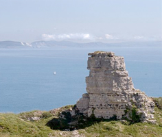 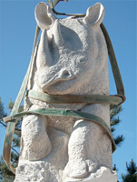 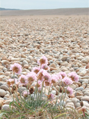 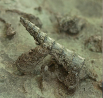 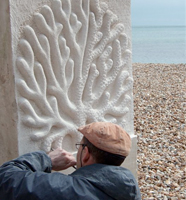 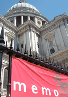 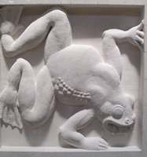 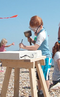
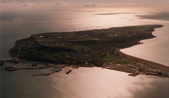 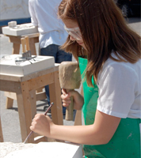 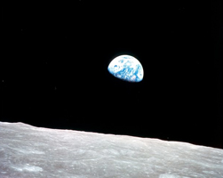 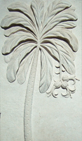 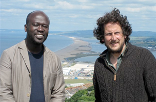
“Ever since life first appeared on this planet, the evolution of some and the extinction of other species has been the inevitable and natural consequence. However, it is only since the human population developed industrial production and reached such a huge total that the extinction of the more vulnerable wild species of plants and animals has reached crisis proportions. Fully comprehending the significance of this is difficult, and communicating it effectively, is even harder.
The MEMO Project is an imaginative proposal to bring this critical situation to the understanding of a wider audience. The creation of a memorial to extinct species in the form of a gallery on the Isle of Portland in the vicinity of the Jurassic Coast, is an imaginative way of drawing public attention to the destructive influence of modern human society, and to encourage an informed culture of respect for the natural world.”
HRH The Duke of Edinburgh, KG KT
“MEMO is an outstanding project... a timely and imaginative response to addressing an issue of vital global importance. The Society has done well to endorse MEMO – it is a project which will and must succeed.”
Sir David Read
FRS Vice President and Biological Secretary, the Royal Society, 2003-2008, and MEMO Patron
“I was deeply moved on learning of this brilliant, profound, and ultimately humanitarian enterprise.”
Professor E.O. Wilson
MEMO Patron
“The current loss of biological diversity on earth is one of the greatest crises of our time with profound long-term consequences for mankind. One of the reasons that it continues unabated is a lack of public awareness of the issue and the value that biological systems provide including everyday fundamentals like fresh air, clean water and fertile soil. We urgently need to rectify this. And that is why MEMO is so important to the world. Combining art, science and public participation, MEMO is a truly unique educational tool of global significance.”
Ahmed Djoghlaf
Former Executive Secretary of the UN Convention on Biodiversity
“The potential cultural, economic and educational benefits are huge.”
Tom Grainger
Outgoing CEO, Weymouth and Portland Borough Council 2010
“The Memo Project is beautiful, it is powerful and its message is simple. Its creation will provide a global icon to our need to respect and protect the natural world and will ask, in its mute testament whether we are worthy of the name we gave ourselves; Homo sapiens – the wise hominid.”
Tim Smit KBE
CEO and co-founder of the Eden Project and Principal Advisor to MEMO
“I went home and showed all my fossils I found to my family and told them that I carved on a massive block to go on an island and it’s going to stay there forever.”
Isabelle
Feedback on MEMO activities on Schools Day at the Lyme Regis Fossil Festival, 2010
“Some ‘difficult’ students suddenly became engaged in the stonework and stayed at lunch and after school. The presence of MEMO has been brilliant.”
Non-teaching member of staff
Feedback from MEMO residency at Royal Manor Arts College, Portland, 2010